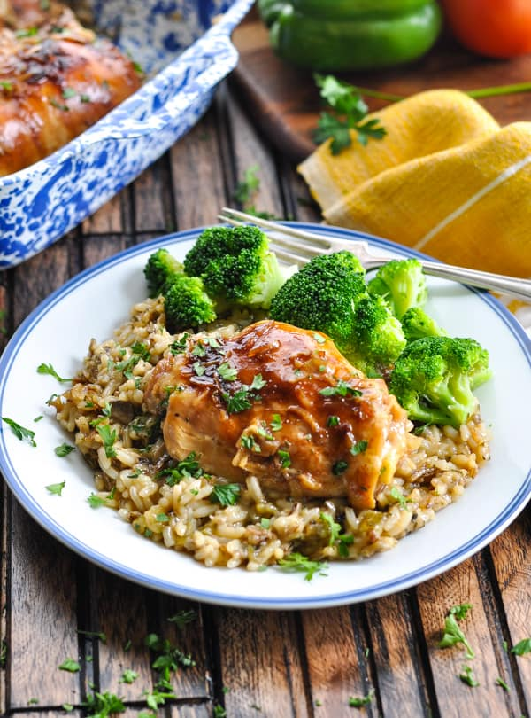

Easy Chicken over Wild Rice

Description
Just like mom used to make it. A simple to make comfort dish.
This is a classic and beloved dish of baked chicken breats over wild rice. Minimal preparation is required. Pair with your favorite vegetable for a relaxing and tasty meal.
Ingredients
- 4 boneless, skinless chicken breasts
- 1/4 stick of butter
- 1/4 teaspoon ground black pepper
- 1 can (oz) Campbell's© Condensed Cream of Chicken Soup
- 3 cups instant wild rice
- Preheat oven to 350 °F
- Over medium heat, melt butter in large frying pan
- Pan fry chicken until both sides browned and chicken fully cooked
- Spraycasserole dish with non-stick cooking spray and mix in rice, 3/4 can of soup and pepper
- Add chicken breats to top of rice mixture and coat entire top of dish with remaining soup
- Bake covered for 45 minutes
- Remove cover and continue baking for 15 minutes or until top is golden brown